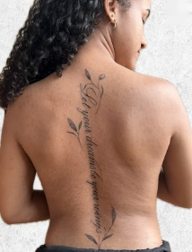
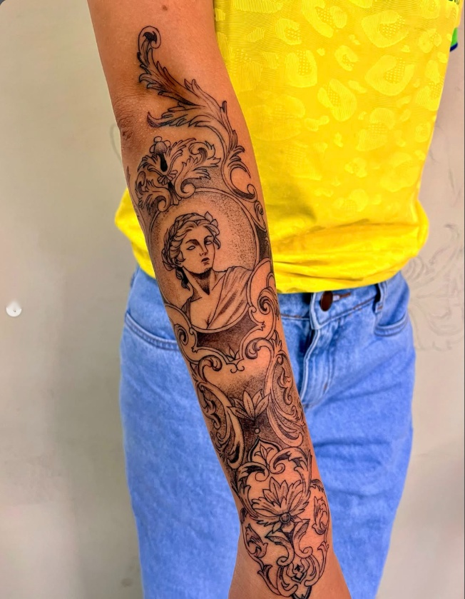
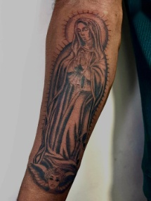
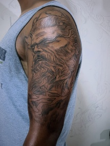
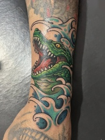
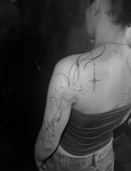

Tattoo artista · Paris
Rikelmy
Tatuador brasileiro em Paris. Fineline, blackwork, realismo, colorido e coverup, desenhados sob medida para o seu corpo.
O que eu faço
- FinelineTraço fino, flores, letterings e composições que seguem o corpo.



- BlackworkPreto sólido, contraste forte, do pequeno ao braço fechado.



- RealismoRetratos e personagens com sombra e profundidade.



- ColoridoPeças vibrantes, de anime a ilustração.


- CoverupCobre a tatuagem antiga com um desenho novo.


Trabalhos recentes



Mais trabalhos no Instagram @rikelmy_tattoo.
Como funciona
- Escolha um horárioMarque um dia livre na agenda e conte a ideia, o local do corpo e o tamanho.
- Confirme o orçamentoRikelmy confirma o valor e recebe as referências pelo WhatsApp.
- Combine o sinalFeche o sinal pelo WhatsApp para garantir a data da sessão.
- Dia da tatuagemChegue descansado e alimentado. Depois, siga os cuidados de cicatrização.